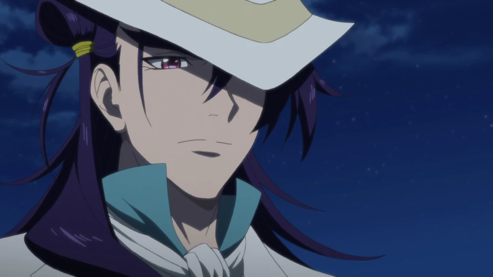

Illuminati
Bavarian
Adam Weishaupt
El director y principal autoridad de los Illuminati bávaros. Dentro de la organización, hay quienes dicen que es "todo atractivo y sin cerebro". Su verdadera identidad es un prototipo humano desechado, un títere, creado incluso antes de la era de la civilización prehistórica. La razón por la que fue descartado fue por ser demasiado "perfecto". Estaba equipado con todas las habilidades y funciones que sus creadores querian, pero sólo esos y nada más. Eventualmente se determinó que esto causó que él tuviera cero potencial para la evolución y por lo tanto fue pasado por alto como designado oficialmente como "humano.